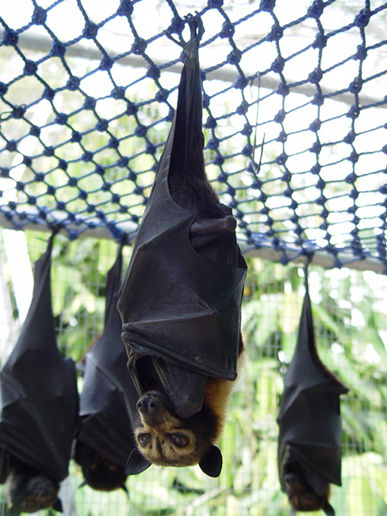
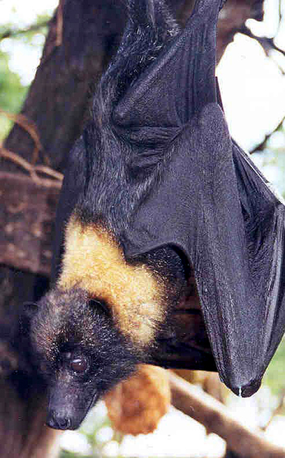
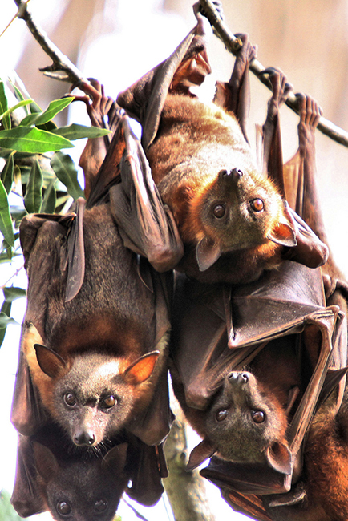

By Mnolf [GFDL (http://www.gnu.org/copyleft/fdl.html), CC-BY-SA-3.0 (http://creativecommons.org/licenses/by-sa/3.0/) or CC BY-SA 2.0 (https://creativecommons.org/licenses/by-sa/2.0)], via Wikimedia Commons.

By Ann Hudgins, U.S. Fish and Wildlife Service Division of Public Affairs; Modified by Fir0002 [Public domain], via Wikimedia Commons.

By Mdk572 (Own work) [CC BY-SA 3.0 (https://creativecommons.org/licenses/by-sa/3.0)], via Wikimedia Commons.